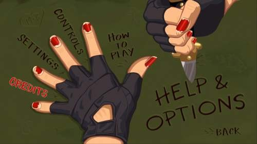
Se fai vedere a un qualsiasi programmatore di giochi delle lezioni sulle interfacce utente di circa il 2006, e poi gli mostri quello che ha messo insieme in un gioco moderno, riconoscerà quasi tutto, con qualche piccola riserva. Sono cambiati i nomi delle API e il linguaggio di codegen, ma l'architettura e le idee di fondo sono rimaste le stesse: un albero di controlli, proprietà con reflection, collegamenti tra proprietà, template, un'astrazione sopra il motore e l'eterna guerra per la pixel-perfection.
L'interfaccia utente nei giochi è il posto dove si incontrano tutti insieme i peggiori requisiti architetturali, sopra i quali si stratificano le pretese del designer della UI, che siede dall'altra parte della scrivania e chiede che una finestra compaia «così, con un'animazione», dove «così» dipende dal fatto che si sia già bevuto la sua tazza di caffè oppure no. La sera passa l'artista, che ha disegnato un pulsante in Photoshop e vuole che appaia pixel-perfect sullo schermo, e sei tenuto a onorare queste richieste, perché in questa catena decisionale l'artista sta più vicino all'immagine finale. E poi c'è il programmatore di gameplay, che non vuole sapere come si chiama una certa label, e non dovrebbe doverlo sapere.
Verso la fine arriva il localizzatore, che ha trasformato «1 enemy / 2 enemies» in «1 враг / 2 врага / 5 врагов» con la sua dipendenza dal genere grammaticale. A volte fa capolino l'ingegnere del porting, che deve far girare quella stessa finestra su PC, console o mobile con risoluzioni e proporzioni diverse — vabbè, lasciamolo stare, è un programmatore per conto suo e si scriverà il codice da solo se serve. E tutti questi requisiti in qualche modo devono convivere.
La maggior parte degli studi ha cominciato scrivendo il sistema GUI «sul posto», cioè per un gioco specifico, per un renderer specifico, con un layout hardcoded, e quando è uscito il gioco successivo si è scoperto che tirar fuori la vecchia GUI era quasi impossibile. Una UI del genere si fonde completamente con il renderer, l'input, il suono e la logica di gioco, e ogni progetto successivo comincia con la frase «stavolta facciamolo per bene», e ogni iterazione successiva ha mostrato che «per bene» non è un compito solo, ma molti, tutti nello stesso momento.
Restate sintonizzati — ci sarà una seconda parte su come questa stessa UI è stata tormentata da un gioco all'altro...
Le fondamenta
La struttura classica (il che non significa l'unica) di un'interfaccia utente è quasi ovunque la stessa e assomiglia a un albero di nodi, dove ogni nodo è o un container con figli o un controllo foglia (finale) — un pulsante, una label, un'immagine — il che è il classico pattern Composite della GoF nella sua forma più canonica.
Window
├── Panel "Header"
│ ├── Label "Title"
│ └── Button "Close"
├── Panel "Content"
│ ├── ListBox "Items"
│ └── ScrollBar
└── Panel "Footer"
├── Button "OK"
└── Button "Cancel"Questo albero viene poi percorso per tutto: per il rendering, per l'hit test, per applicare gli effetti, per il salvataggio, per inviare messaggi. Tutti i motori moderni sono costruiti sopra questa stessa idea, da Slate in Unreal a UGUI e UI Toolkit in Unity, o i nodi Control in Godot, e le differenze di solito cominciano al livello di «come questo albero viene creato, memorizzato e modificato».
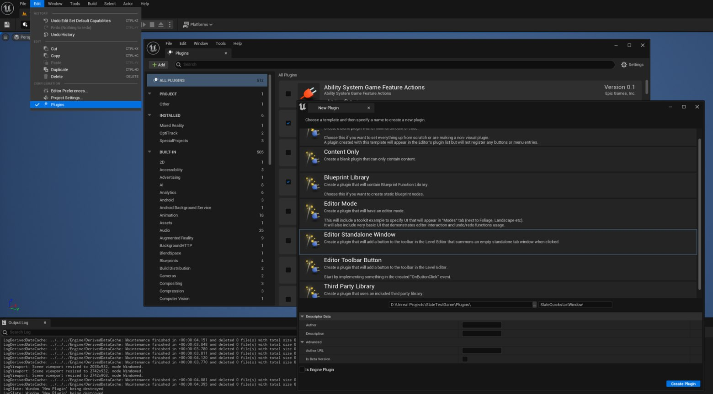
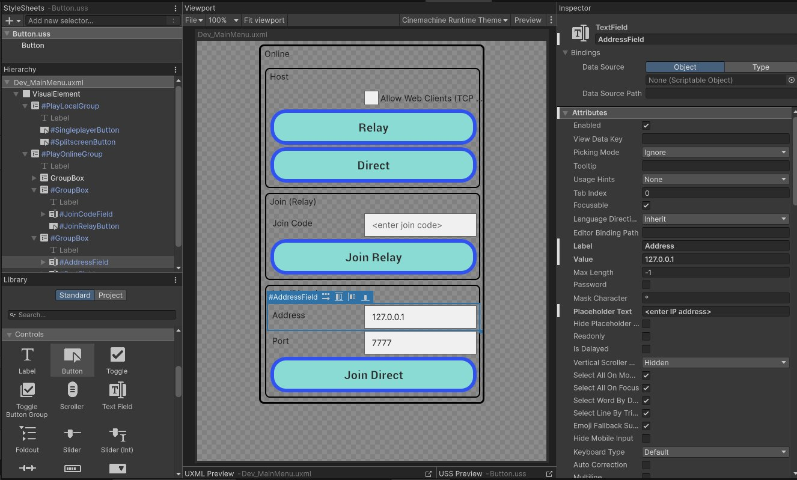
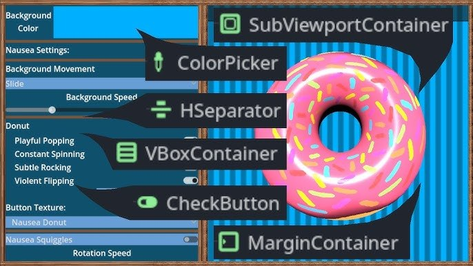
Il Composite è buono perché quasi qualsiasi operazione si formula come un percorso dell'albero. Il Composite è cattivo perché un percorso implementato ingenuamente può attraversare l'albero dieci volte al frame e bruciare il budget del frame, ed è per questo che i sistemi reali cachano i bounding box, gli hit del mouse, la visibilità, la trasformazione risultante e la geometria finale per il rendering.
Proprietà e reflection
Se sull'albero c'è un pulsante, allora ha dei parametri come posizione, dimensione, testo, texture di stato, font, colore e un gestore di click. Se dichiari questi parametri come normali campi C++, allora l'editor della GUI non sarà in grado di mostrarli senza un hardcoding separato per ogni classe di controllo, perché il C++ non sa nulla dei nomi dei propri campi.
La soluzione a cui sono arrivati tutti i motori è questa: ogni controllo ha una lista di proprietà, e ogni proprietà porta con sé il proprio nome, tipo e valore. Questo permette alle proprietà di vivere in un normale vector ed essere accessibili per nome.
struct Property {
std::string name;
PropertyType type;
variant<int, float, std::string, Color, Texture*> value;
};
class Control {
vector<Property> properties;
public:
const Property* find(const std::string& name) const;
void set(const std::string& name, const Variant& value);
const std::vector<Property>& list() const;
};L'editor della UI riceve questa lista e costruisce un pannello delle proprietà, dove per ogni proprietà c'è un widget del tipo appropriato. Non serve nessun binding manuale del tipo «questo campo lo modifichiamo con uno slider, e questo con una checkbox» — hai aggiunto una nuova proprietà nel codice ed è comparsa nell'editor. Questa stessa tabella delle proprietà è usata dal controllo stesso per tutti i suoi calcoli, quindi non si presenta il classico problema del «una cosa nell'editor, un'altra a runtime».
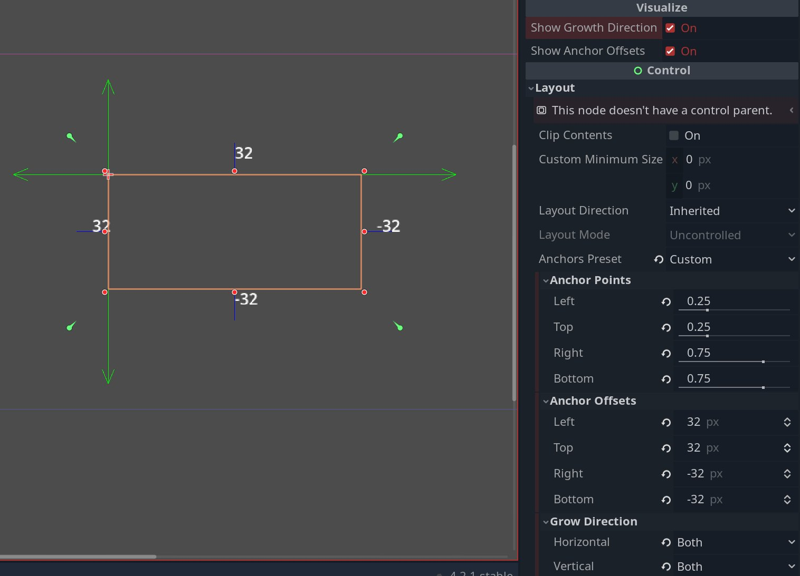
Questo approccio vive sotto nomi diversi in tutti i motori. In Unity è SerializedProperty sopra l'attributo [SerializeField], in Unreal UPROPERTY(), in Godot @export, in WPF/WPFG DependencyProperty. Ovunque l'idea è che ogni proprietà debba essere descritta come dato, non come codice C++/C#, altrimenti né l'editor, né il serializzatore, né l'animazione ne sapranno nulla.
Come bonus ottieni una bella introspezione in debug, dove puoi fare il dump dello stato di qualsiasi controllo con una sola funzione e vedere direttamente nei log quali erano i valori delle sue proprietà nel momento del bug. Chiunque abbia visto un dump di widget in qualcosa come Hearthstone, con le sue interiora a penzoloni, sa cosa intendo.
{
"widget_type": "CardRewardPopup",
"game": "Hearthstone-rt-europe-aw-ttn",
"version": "1.4.2",
"state": {
"visible": true,
"animation": "goldenReveal",
"input_locked": false
},
"layout": {
"anchor": "center",
"width": 1280,
"height": 720,
"background": {
"texture": "ui/rewards/reward_bg_parchment.png",
"vignette": true,
"particles": "embers_soft"
}
},
"header": {
"title": "Victory Reward",
"font": "BelweBold",
"color": "#F6D37A",
"glow": true
},
"cards": [
{
"entity_id": 77421,
"card_id": "CORE_EX1_116",
"name": "Leeroy Jenkins",
"rarity": "Legendary",
"mana_cost": 5,
"golden": true,
"foil_animation": "legendary_swirl",
"position": {
"x": 0.5,
"y": 0.48
},
"rotation": -1.2,
"scale": 1.15,
"sound_on_reveal": "sfx_card_legendary_reveal"
}
],
"buttons": [
{
"id": "btn_collect",
"text": "Collect",
"style": "hs_primary_blue",
"hover_sound": "sfx_hover_generic",
"click_sound": "sfx_confirm"
},
{
"id": "btn_share",
"text": "Share",
"style": "hs_secondary_wood"
}
],
"effects": {
"camera_shake": {
"enabled": true,
"intensity": 0.15
},
"screen_particles": {
"enabled": true,
"preset": "legendary_fireflies"
},
"ambient_audio": "music_pack_opening_soft"
},
"telemetry": {
"session_id": "5fbb2b93-c7e0-4f4c-b3fc-dca2af2fce11",
"source": "arena_reward_track",
"fps_capture": 60
}
}Collegamenti tra proprietà e disaccoppiamento dal codice di gioco
Il classico problema in cui incappa qualsiasi GUI fatta con sciatteria è quando il codice di gioco, per aggiornare un valore sullo schermo, deve conoscere il nome della finestra e il nome di uno specifico controllo dentro la finestra.
// Non farlo
FindControl("hud_root")->FindControl("label_armor")->SetCaption(player.armor);
FindControl("hud_root")->FindControl("label_hp")->SetCaption(player.hp);Qualsiasi ridisegno della finestra da parte di un artista rompe il codice di gioco, rinominare un controllo rompe il codice di gioco, sostituire una label con una progress bar rompe il codice di gioco, perché una progress bar non ha un metodo SetCaption. È una trappola tipica; ha persino un suo nome (il train-wreck code).
Scientificamente si chiama Feature Envy dal catalogo di Fowler, quando un metodo di una classe sa troppo delle interiora di un'altra e ci mette attivamente le mani dentro. Ma quando due moduli sanno troppo l'uno dell'altro, una modifica a uno si trascina inevitabilmente dietro una modifica all'altro. Al di là delle specificità della GUI, questo si chiama anche Fragile Class, che è una classica violazione del principio di separazione della presentazione dalla logica.
Il disaccoppiamento si fa attraverso uno strato di binding, dove a livello di editor ogni controllo espone verso l'esterno non le sue proprietà interne, ma i nomi rivolti al gioco che sono collegati a quelle proprietà. Cioè, l'artista assembla la finestra dell'HUD, aggiunge una label, e nelle sue impostazioni specifica: «la mia proprietà text sarà visibile dall'esterno con il nome armor_value». E dentro il codice di gioco l'aggiornamento appare così:
gui.update_window("hud", {
{"armor_value", player.armor},
{"hp_value", player.hp},
{"unit_name", player.name},
{"unit_icon", player.portrait},
});Il codice di gioco non ha più bisogno di conoscere il tipo del controllo, la struttura della finestra, o addirittura quante label ci sono su di essa. L'artista può fare a pezzi tutto ciò che c'è dentro la finestra e riassemblarlo, e finché i nomi dei binding non sono cambiati, il gioco continua a funzionare. Questo stesso pattern è vissuto, vive e vivrà in ogni sistema di binding WPF/WGFG, dove tutto ciò che non è legato al rendering del widget viene spostato in un config.
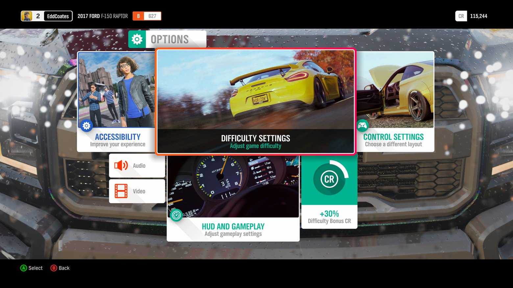
Template e prefab molto prima di Unity
Quando in un progetto compaiono decine di finestre, si scopre che ognuna di esse ha pezzetti identici, per esempio un pannello con un titolo e una crocetta di chiusura, un pulsante «OK/Annulla», tab, liste con scroll. Costruire da zero lo stesso set di controlli in ogni finestra è doloroso, e farne classi C++ separate sarebbe ancora più doloroso, perché dopo non le puoi modificare nell'editor come normali dati.
La soluzione a questo problema sono diventati i template (Unity molto più tardi li avrebbe chiamati Prefab, e in Unreal è la Blueprint Class). E funziona quasi letteralmente come il Prototype della GoF, con l'avvertenza che lì non ci sarà ereditarietà, ma semplicemente la copia delle proprietà e di tutti i componenti figli.
Template "DialogWithHeader"
├── Panel "Background"
├── Panel "TitleBar"
│ ├── Label "Title"
│ └── Button "Close"
└── Panel "Content" <-- slot per il contenuto utentePoi il template viene registrato nella factory come un nuovo tipo di componente, compare nella palette dell'editor e può essere trascinato sulle finestre come un normale pulsante. A livello di salvataggio i template sono memorizzati in un file, ma non viene memorizzata l'intera struttura interna del template, solo il nome del template e il diff delle proprietà della specifica istanza rispetto a quella di riferimento.
<instance template="DialogWithHeader" name="QuitDialog">
<override path="TitleBar.Title.text" value="Uscire dal gioco?"/>
<override path="Content" value="@QuitDialogContent"/>
</instance>Questo formato di diff sarebbe stato poi ereditato esattamente in questa forma da Unity (i Prefab Overrides, comparsi in Unity 2018) e Unreal (Blueprint Defaults). Se qualcuno ha mai aperto un file .prefab in un editor di testo e ha visto una montagna di m_Modifications, è esattamente quello.
Messaggi e livelli dei gestori
Quando un pulsante viene toccato o gli si fa qualcosa, qualcuno deve gestirlo. Di solito si distinguono tre livelli di gestori.
Il processore dei messaggi, o funzione di basso livello, che riceve il messaggio «grezzo» dal mouse, valida i parametri e decide cosa è successo davvero (un click, un drag, un hover). Il suo compito è separare «cosa è arrivato dall'hardware» da «cosa significa per la UI». Il mouse invia coordinate e flag dei pulsanti, e qualcuno deve decidere che è stato specificamente un click e non l'inizio di un drag, e che le coordinate sono cadute su questo pulsante nello specifico e non su quello vicino, tenendo conto di hitbox e sovrapposizioni.
// Vive nel sistema di input della GUI, non nel controllo
// Quindi lo stato che attraversa i frame vive qui
class InputProcessor {
void on_mouse_down(const MouseEvent& e, double now) {
...
}
void on_mouse_move(const MouseEvent& e) {
...
}
}Questo si fa a un livello separato per garantire una validazione unificata per tutti i controlli: controllare le coordinate, controllare che il pulsante non sia disabilitato, controllare che non sia coperto da un'altra finestra non dovrebbe essere duplicato in ogni OnClick. E solo qui possiamo distinguere un click da un drag, un doppio click da un click singolo, il che richiede di mantenere lo stato tra i frame (il momento della pressione, il delta delle coordinate), ed è sciocco tenerlo nel controllo stesso.
Il gestore di sistema, o un metodo virtuale come OnClick, che il controllo può fare override per cambiare il proprio stato interno (per esempio, il pulsante cambia la sua texture da idle a pressed).
Perché questo viene spostato in un livello separato invece di farne parte del gestore utente? Semplicemente perché lo stato visivo del pulsante è responsabilità del pulsante stesso, non del codice di gioco che lo usa, e se questo livello non esistesse, ogni gestore utente sarebbe tenuto a cambiare la texture manualmente, e aggiungendo un nuovo tipo di pulsante bisognerebbe cambiarlo ovunque venga usato.
Un metodo virtuale permette a una sottoclasse di fare override del comportamento senza toccare né il livello sopra né quello sotto. ToggleButton fa override di OnClick per restare nello stato pressed dopo il rilascio, RadioButton ne fa override per deselezionare i suoi vicini, facendo tutto questo senza sapere cosa faccia esattamente il gestore utente.
class Button : public Control {
virtual void on_press() { set_texture(textures.pressed); }
virtual void on_release() { set_texture(textures.idle); }
virtual void on_click() {} // per un pulsante normale, visivamente click == release
}Il gestore di sistema deve essere chiamato prima di quello utente, così che nel momento in cui il codice di gioco reagisce al click, il pulsante abbia già cambiato visivamente il suo stato. La spiegazione è puramente psicologica e viene dall'UX: se il gestore utente fa qualcosa di lungo, il giocatore vede già il feedback che la pressione è stata registrata.
L'ultimo livello è il gestore utente, o delegate, che viene attaccato dall'esterno e non sa nulla delle interiora del pulsante, e il suo compito è esclusivamente la logica di gioco: aprire una schermata, avviare una missione, sottrarre monete.
// Il binding è nei dati/nell'editor, non nel codice del pulsante.
// Il pulsante non conosce né il tipo dell'azione né i suoi parametri.
start_button.bind("OnClick", StartMissionAction{}, {{ "mission_id", 7 }});Di nuovo, perché un functor? Perché non un metodo virtuale? Perché un metodo virtuale richiede l'ereditarietà, e l'ereditarietà significa che per ogni pulsante con comportamento diverso servirebbe una classe separata. In un gioco reale ci sono centinaia di pulsanti e centinaia di comportamenti, e creare StartMissionButton, OpenShopButton, AddCoinsButton — il terzo livello chiude questa faccenda, permettendoti di collegare qualsiasi comportamento a qualsiasi pulsante senza una nuova classe. Il pulsante non conosce il nome della finestra da aprire, non conosce il nome del controllo a cui dire qualcosa, si limita a comunicare «sono stato cliccato» e oltre a questo non sono affari suoi. Puoi collegare parametri a un functor prima che venga chiamato, puoi serializzarlo nell'editor come «questo gestore con questi e quest'altri argomenti», puoi copiarlo in una coda di comandi.
GUI_ACTION(StartMissionAction) {
int mission_id = get_param<int>("mission_id");
g_game.start_mission(mission_id);
};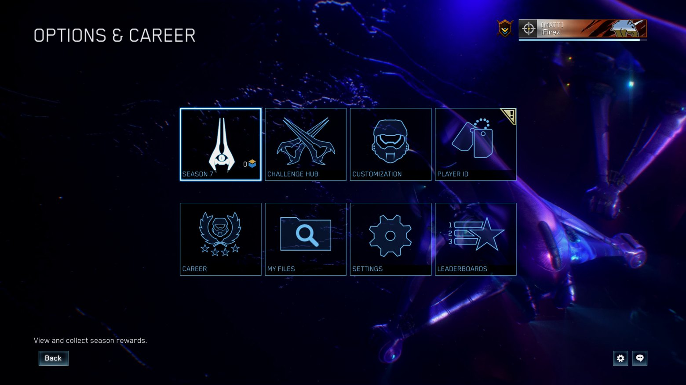
class Button : public Control {
void process_mouse_click(const MouseEvent& e) { // processore
if (!hit_test(e.x, e.y)) return;
on_click(); // gestore di sistema
fire_user_action("OnClick"); // utente
}
virtual void on_click() { // sistema
set_texture(textures.pressed);
}
};I motori moderni ripetono questi livelli uno a uno, semplicemente perché non è stato inventato niente di meglio. In Unreal Slate c'è «OnClicked», in Unity UI l'evento Button.OnClick(), in Godot hanno un po' arzigogolato e hanno fatto i signal, ma anche quello è venuto bene. Tra il processore dei messaggi e il gestore utente c'è sempre una funzione virtuale in cui il controllo cambia il proprio aspetto. Se in qualche motore vedi un pulsante la cui «pressione» arriva direttamente nel codice utente, scavalcando la reazione visiva interna, quello è un motore che ti darà ancora dei problemi.
Come recapitare un messaggio
Il modo ingenuo di recapitare un messaggio in un albero di controlli è il «bubbling»: mandi un messaggio alla radice, questo attraversa l'albero e qualcuno lo intercetta. È quello che fa l'HTML con il suo event bubbling e la WinAPI con la sua catena di WndProc. Questa è roba scadente a tutti gli effetti, di fine anni '80, perché allora non era stato inventato niente di meglio, ma poi si è trasferita in qualche forma nei motori e lì è rimasta. In una finestra grande con un centinaio di controlli un comportamento del genere diventa imprevedibile, e non è chiaro chi abbia «mangiato» il messaggio lungo la strada e perché, e bug del genere si debuggano solo «a occhio».
class Gui {
std::unordered_map<std::string, Control*> windows_; // indice delle finestre top-level
public:
// Il caso più comune, dal codice di gioco per nome della finestra.
void send(const std::string& window, const GuiMessage& msg) {
if (auto it = windows_.find(window); it != windows_.end())
it->second->dispatch(msg);
}
// Per puntatore quando il destinatario è già a portata di mano, senza una ricerca per stringa.
void send(Control* target, const GuiMessage& msg) {
if (target)
target->dispatch(msg);
}
};
gui.send("pause_menu", GuiMessage::Hide); // "nascondi la finestra pause_menu"Il sofferente più vecchio e più ostinato è Unity uGUI, e la classica lamentela dello sviluppatore è «un'altra UI intercetta i miei click». Il debug si riduce a selezionare l'EventSystem e guardare nel pannello di preview chi esattamente ha ricevuto l'evento. Un'Image invisibile con Raycast Target abilitato può mangiarsi tutti i click, e la puoi trovare solo a occhio attraverso l'albero della gerarchia. Gli eventi in uGUI si propagano al contrario, da figlio a genitore, cioè è «bubbling inverso», e il genitore riceve l'evento solo se il figlio non l'ha gestito. Questo è un po' meglio della WinAPI, ma il problema di fondo è lo stesso.
Un'altra vittima è World of Warcraft con il suo framework UI XML+Lua. Anche lì gli eventi risalgono la gerarchia dei frame, e gli sviluppatori di addon hanno combattuto per anni con la situazione in cui l'addon di qualcun altro mette un frame invisibile sopra tutto e si mangia i click. Blizzard alla fine ha aggiunto SetPropagateMouseClicks proprio come stampella per questo problema.
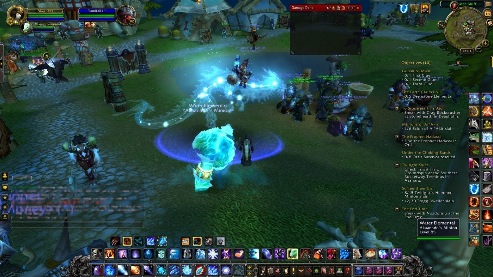
L'uso reale nei giochi si divide in due soluzioni.
I messaggi utente (cambia una proprietà, nascondi una finestra, avvia un effetto) sono recapitati per nome o per puntatore direttamente al destinatario. Di solito per nome, perché è comodo dal codice di gioco («nascondi la finestra pause_menu»), ma i nomi non sono univoci, specialmente dentro i template.
I messaggi di mouse e touch sono recapitati «per coordinate», quando devi trovare il controllo più in alto che copre il punto del click e mandargli il messaggio. Ma se percorri l'intero albero a ogni frame, diventa un collo di bottiglia, quindi l'hit test viene cachato, e finché nessun controllo si è mosso o ha cambiato visibilità, sappiamo quale controllo sta sopra in ogni punto dello schermo, e la ricerca diventa a tempo costante.
Questo meccanismo è usato nel GraphicRaycaster di Unity, dove la cache delle posizioni dei widget viene ricostruita non a ogni frame ma su un trigger di cambiamento della gerarchia. Se la UI del tuo progetto è lenta e GraphicRaycaster.Raycast resta appeso nel profiler, molto probabilmente qualcosa sta involontariamente scatenando un invalidate di questa cache a ogni frame.
// Un "lampeggiatore" di icona dell'HUD che apparentemente non muove niente
void HudBlinker::update() {
icon_->set_position(icon_->position()); // il valore è lo stesso, ma invalidate() è già scattato
// => hit_cache_ è sporca a ogni frame => rebuild() a ogni click
}Regioni e triangoli di hit
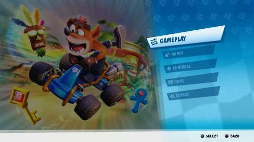
Una cosa ovvia che tutti dimenticano finché non si scontrano con lo smusso di un pulsante arrotondato o con un avatar tondo: l'hit test standard funziona bene solo per controlli rettangolari. Non appena nel design compare un pulsante con un buco al centro, o un esagono su una mappa, o un'icona tonda con sfondo trasparente, nasce il bisogno di un meccanismo che sappia accettare o rifiutare un click non solo in base al box ma alla forma geometrica del controllo.
La forma del controllo in generale può essere una lista di forme che coprono l'area visiva del controllo, e se ne colpisci una, consideriamo che tu abbia colpito il controllo. Di default la regione è costruita dagli stessi dati del bounding box su schermo, quindi i semplici controlli rettangolari ottengono tutto gratis, mentre le forme complesse vengono specificate manualmente o assemblate da una griglia 9-slice.
L'esempio più vivido è Civilization VI con i suoi esagoni, che in proiezione sullo schermo sembrano rombi. Un hit test rettangolare standard catturerebbe i click sugli angoli degli esagoni vicini, e per evitare che ciò accada, ogni esagono ha bisogno o di una forma poligonale esatta o di un hit test sull'alpha sopra la texture renderizzata. In Civ questo si fa a livello di una griglia GUI 2D generata sopra il 3D, e un click 3D viene convertito di nuovo in 2D, contro cui si eseguono i controlli, perché è più economico, ma architetturalmente il compito è lo stesso in entrambi i casi.
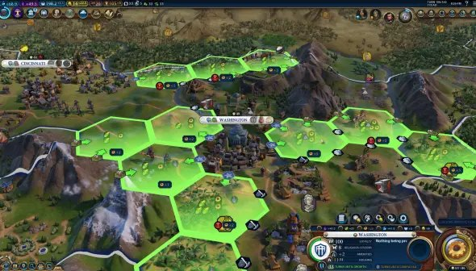
Messaggi sincroni
C'è ancora una soluzione a cui i progetti arrivano più verso la metà. All'inizio tutti i motori facevano i messaggi asincroni, semplicemente mettendoli in una coda e processandoli in un solo passaggio alla fine del frame. Questo funziona, ma funziona solo su scene piccole.
Il problema emerge quando gestire un messaggio ne genera una dozzina di nuovi. Quello che succede è: mille messaggi si sono accumulati per la fine del frame, il frame parte a processare la coda e il gioco singhiozza. In più il debug si rompe, perché non è chiaro da dove sia arrivato un messaggio rotto, dato che la coda non ha uno stack di chiamate e il contesto è perso.
Così si passa ai messaggi sincroni, dove hai creato un messaggio, l'hai riempito di parametri, e questo è stato eseguito subito nello stack corrente. Lo stack di chiamate è significativo, il debug è sensato, e non c'è nessuna «raffica di mille messaggi alla fine del frame».
Gratis otteniamo la possibilità di scrivere i messaggi che sono passati attraverso la GUI in, diciamo, un journal e poi riprodurli. È esattamente lo stesso modello del sistema di replay in un RTS come StarCraft II o AoE2, solo che qui è usato non per registrare match multiplayer, ma per due cose: test automatici («registra i click di un tester, poi riproducili ogni notte in CI») e riprodurre bug («allega una registrazione al bug, e lo si può riprodurre premendo Play»).
GuiMessage msg;
msg.open("OnPropertyChanged");
msg.param("target", "label_armor");
msg.param("property", "text");
msg.param("value", std::to_string(armor));
msg.close(); // <-- qui tutta la gestione avviene in modo sincrono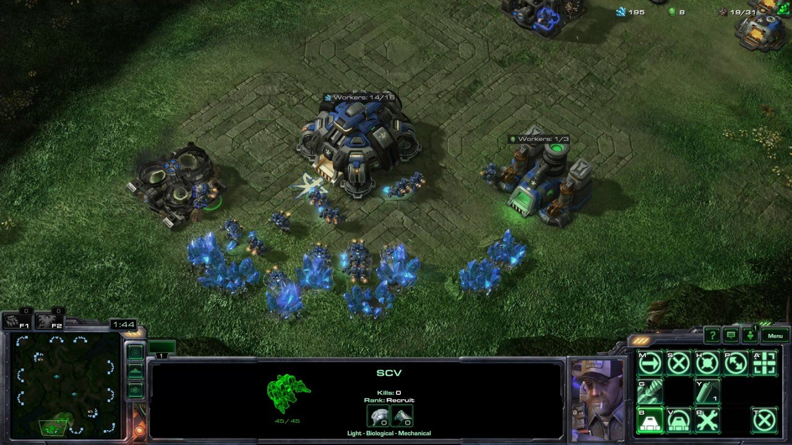
Layout, allineamento, dimensioni e constraint
Se imposti le coordinate dei controlli in pixel, l'interfaccia va alla deriva a risoluzioni diverse. Se le imposti solo come percentuali dello schermo, allora su un 21:9 largo i pulsanti finiscono stirati e le texture al loro interno sfocate. Se solo per allineamento (top/bottom/center), allora il designer perde libertà, e a un certo punto chiede di «ancorare questo pulsante al bordo destro con un offset di 16 pixel, ma non oltre il centro». Sotto qualsiasi constraint rigido la UI si rompe, quindi bisogna scendere a compromessi e tenere meccanismi diversi. Flag di allineamento per l'ancoraggio (Left/Right/Top/Bottom/Center) ai punti del genitore, coordinate relative così che «questo pannello occupa il 30% della larghezza della finestra», e constraint, come «ma non meno di 200px e non più di 600px».
Senza il terzo punto ti ritrovi in una situazione dove «aggiusti una combinazione di flag, e un'altra si rompe; aggiusti quella, e una terza si rompe». Questo non è proprio un esempio dai giochi, riguarda più la UI mobile, ma anche i giochi ci sono passati attraverso.
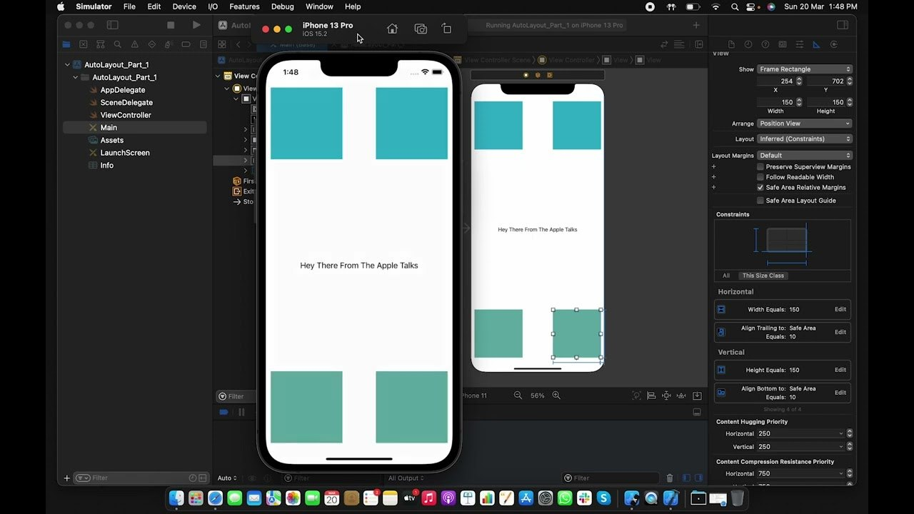
Al RectTransform di Unity ci sono voluti quasi 5 anni e due major perché comparissero gli anchor (flag), il pivot (il punto del posizionamento relativo) e gli offset numerici (constraint). Anchor, pivot e offset sono comparsi tutti insieme in Unity 4.6 nel 2014 quando è uscito uGUI — è stata una grande release di un nuovo sistema UI, non un'aggiunta graduale nell'arco di cinque anni. Prima di allora Unity aveva il sistema OnGUI (IMGUI), che non aveva affatto un vero layout manager, quindi «cinque anni e due major» riguarda più quanto a lungo Unity è vissuta senza una vera UI che il miglioramento iterativo del RectTransform.
Unreal, dal canto suo, l'ha fatto quasi subito, prendendo le buone soluzioni dal web con il suo CSS, e il CSS stesso era arrivato a flexbox e grid attraverso un decennio di esperimenti, ma in sostanza risolvendo lo stesso compito — come fare un layout che sopravvive a qualsiasi risoluzione senza rilavorazioni. L'UMG di Unreal è comparso in UE4 più o meno nello stesso periodo dell'uGUI di Unity, ma la maggior parte di questi concetti veniva dai framework UI desktop (WPF, Qt, Cocoa), che risolvevano anch'essi lo stesso compito indipendentemente dal web e a volte prima di esso.
Texture come 9-slice
Un pulsante in una GUI non è quasi mai una texture piatta, ed è o una cornice stirabile con angoli, bordi e un riempimento al centro, o qualcosa che si può assemblare da altre «forme», quindi c'è una tecnica standard, inventata nei primi anni 2000 e ancora viva in ogni motore. Dividiamo l'immagine del pulsante in una griglia di celle 3×3, dove le celle d'angolo non si stirano, le celle di bordo si stirano lungo un asse, e quella centrale lungo entrambi.
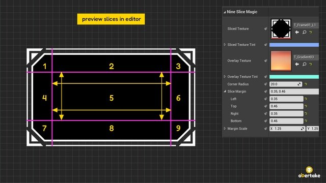
Ogni cella ha delle proprietà: cosa c'è dentro (un pezzo di texture), come si stira (fissa, stirante, tile, tile specchiato). Questo è il 9-slice di base, che oggi è integrato in tutto, da Unity a Flutter e praticamente qualsiasi motore UI. Il tiling storicamente si fa con la geometria invece che con le coordinate UV in uno shader, così che possa essere impacchettato in un unico atlante di texture. Se il tiling si fa tramite coordinate UV, allora la texture deve essere separata, e un atlante non può ripetersi, sconfinando in uno sprite vicino quando si ripete. Ma se fai il tiling come diversi rettangoli con le stesse UV, allora puoi usare un atlante e impacchettare l'intera GUI in una texture e renderizzarla in un'unica draw call.
Coordinate intere
Se imposti le coordinate dei controlli in float, prima o poi arriva un designer che fa un pulsante che finisce tra due pixel del monitor. Di conseguenza la linea pulita del pulsante diventa due linee semi-trasparenti, il testo diventa una poltiglia, e l'interfaccia stessa diventa sfocata — questo si vede particolarmente male con il testo. Se la UI del tuo gioco «è diventata sfocata chissà come», quasi certamente hai accumulato una parte frazionaria da qualche parte nelle coordinate.
La cura per questa seccatura è esattamente una: memorizza le coordinate dei controlli in int, e fai tutti i calcoli intermedi (animazione, risoluzione del layout) nel tipo più ampio float, ma arrotonda a int prima di inviare la geometria alla GPU.
L'industria dei giochi moderna è arrivata a questo e ha elaborato la sua regola, chiamata «pixel-perfect rendering», e qualsiasi gioco pixel-art come Celeste, Dead Cells o Hyper Light Drifter non può permettersi pixel fluttuanti, e la sua intera GUI è calcolata rigorosamente in interi. Lo stesso vale anche per i giochi non pixel, solo che lì gli errori sono meno evidenti. Se guardi l'esempio qui sotto, la parte Normal appare spalmata esattamente per questo motivo.
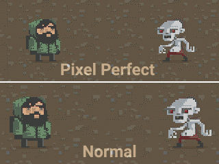
I giocatori si lamenteranno dei pulsanti sfocati, per quanto belli possano sembrare.
Una buona UI è un buon Bridge
Qualsiasi UI che aspiri al riuso tra progetti è tenuta a essere disaccoppiata da tutto il più possibile. Dal renderer, dal sistema del suono, dal linguaggio di scripting e dal motore di input, e l'unico modo per disaccoppiare è il pattern Bridge, dove tra la GUI e ogni sottosistema sta un'interfaccia che in un progetto guarda a DirectX, in un altro a OpenGL, in un terzo a Vulkan, in un quarto a Metal.
Tutti i motori UI commerciali ci sono arrivati alla fine, e l'apice dello sviluppo è stato Scaleform, che sotto il cofano si appoggiava sul vecchio Flash ma esponeva un render backend astratto, permettendoti di incorporare la UI ovunque, purché ci fosse una texture. Funzionava in Mass Effect 2, e in GTA V, e in Crysis 2. Ma Scaleform non usava Adobe Flash Player come dipendenza; semplicemente hanno scritto il proprio runtime SWF che leggeva lo stesso formato di file di Flash ma renderizzava attraverso un backend astratto. Cioè, non era solo un «wrapper su Flash», ma una propria implementazione compatibile con il formato.
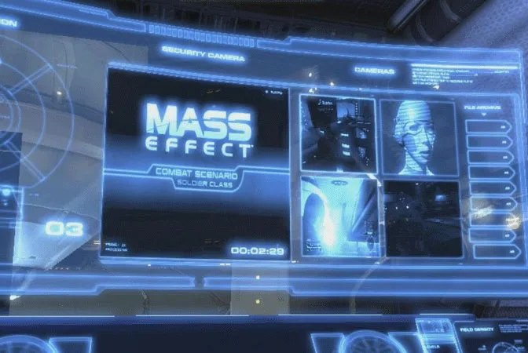
Coherent Gameface è andato oltre e ha fatto il proprio motore HTML, così che una stessa UI potesse essere costruita facilmente per DX11/DX12/Vulkan/PS5/Switch senza modifiche. Gameface si basa sulle proprie librerie Cohtml e Renoir, scritte da zero appositamente per i giochi, e non si basa su WebKit, Chromium o Gecko — cioè hanno scritto da zero un proprio motore di rendering di pagine compatibile con HTML5, e questa UI è di fatto un sito web, con pagine.
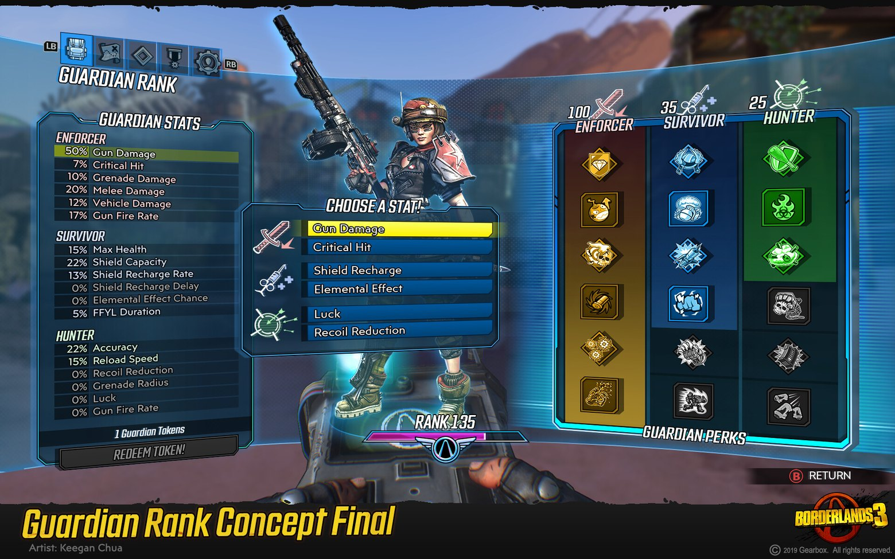
Testo, glifi, tag e stili
Renderizzare testo formattato di per sé non è difficile. Si usa il pattern Flyweight (a.k.a. Glyph), e l'intera stringa viene divisa in piccoli oggetti-carattere, ognuno dei quali conosce la propria posizione, le coordinate della texture nell'atlante del font, il colore e il font. Lo stesso set di glifi viene riusato per stringhe diverse, e la parte pesante (la bitmap dinamica del font) sta in una cache. La complessità comincia al livello di «come descrivere questo testo». La prima generazione di sviluppatori di UI marcava il testo con tag inline, come in HTML:
Congratulazioni, <b><color=red>Gandalf</color></b>!
Raggiunto il livello <size=24>10</size>.Questo ha funzionato finché al designer non è venuta la successiva idea geniale, tipo «facciamo tutti i nomi delle città rossi». Allora si scopre che i tag sono spalmati su migliaia di stringhe di localizzazione, e cambiare lo stile è, nel migliore dei casi, passare manualmente attraverso l'intero file di traduzione e aggiornare i tag, ma le traduzioni sono una cosa piuttosto pericolosa, più avanti su questo. Quindi il passo successivo giusto si rivela sempre essere un foglio di stile, che col tempo cresce in una tabella di stili nominati (hero_name, quest_title, damage_number) che vivono in un file separato, e nel testo si inseriscono solo riferimenti a uno stile:
<styles>
<style name="hero_name" font="title.ttf" size="18" color="#ffcc00" bold="true"/>
<style name="city_name" font="title.ttf" size="14" color="#ff4040"/>
<style name="damage_crit" font="bold.ttf" size="36" color="#ff0000"/>
</styles>
<text>
Congratulazioni, <param style="hero_name">{hero}</param>!
Città <param style="city_name">{city}</param> liberata.
</text>I tag di alto livello come <param> vengono sostituiti con quelli di basso livello (<font>, <size>, <color>) nella fase di preparazione della build, e l'artista della UI può ricolorare tutti i nomi degli eroi in un solo posto, senza farlo due volte. Hmm... sembra che abbiamo inventato il CSS.
Questo CSS vive in WPFG come una risorsa Style, in Unity UI Toolkit come .uss, e in molti motori come un formato custom, ma l'idea è una — fare qualcosa che separa lo stile dal testo. Ora il testo è per conto suo e chiede solo «disegnami nello stile hero_name», mentre com'è fatto esattamente quello stile lo decide il foglio di stile.
Localizzazione, contesto, e perché i tag restano nel testo
In un mondo ideale la localizzazione sarebbe un dizionario chiave -> stringa, ma la realtà delle lingue asiatiche, slave e ugrofinniche rompe crudelmente quell'ideale contro «le ginocchia dei casi». Perché le forme delle parole cambiano con il numero, il genere e il contesto, e nelle lingue asiatiche anche con la posizione della parola nella frase, e «5 enemies» si traduce come «5 врагов», ma «1 enemy» era «1 враг», e «2 enemies» è già diventato «2 врага». Per questo, i localizzatori e gli sviluppatori di giochi detestano davvero le lingue di certi gruppi, maledicendo Cirillo e Metodio in lungo e in largo.
Un template solo qui non funziona, e nemmeno, se è per questo, tre o cinque template. Cirillo e Metodio, certo, hanno inventato l'alfabeto, non le categorie grammaticali della lingua russa, quindi prendersela con loro per i sei casi è un po' ingiusto, ma non rende le cose più facili.
Il problema più duro non sono i casi, ma l'ordine delle parole nelle stringhe composte e il fatto che ciò che in inglese entra in "Found {count} {item}" richiede un'inversione in tedesco, in giapponese il verbo va alla fine, e la concatenazione di stringhe qui semplicemente non funziona affatto. Quindi per certe lingue devi anche costruire uno strato di conversione, o addirittura fare traduzioni custom separate che non entrano nel sistema abituale. Molto raramente ti capiterà, diciamo, una traduzione in estone o finlandese; sono rare perché il finlandese ha quindici casi e l'estone quattordici, dove letteralmente tutto si declina, inclusi i numeri e le costruzioni possessive. In più l'agglutinazione, dove una parola si copre di suffissi e un nome inglese si trasforma in una dozzina di forme, il che rende la localizzazione costosa, e un piccolo mercato non ripaga i costi — anche se gli entusiasti, certo, saltano fuori.
Quindi nella tabella di localizzazione devi memorizzare il contesto e le declinazioni all'interno di una singola voce, e il set minimo di tag per russo/polacco/ceco sarebbe un modo per descrivere la forma plurale (one/few/many), il genere (male/female/neuter) e a volte il caso. Questo è lo stesso modello di ICU MessageFormat, ma il problema è che ora il gioco deve conoscere le peculiarità delle diverse lingue e tenerne conto nel suo codice, che è esattamente ciò che volevamo evitare.
enemies_killed = {count, plural,
one {{count} враг убит}
few {{count} врага убито}
many {{count} врагов убито}
other {{count} врага убито}
}
item_picked_up = {gender, select,
male {Подобран {item}}
female {Подобрана {item}}
neuter {Подобрано {item}}
}
combined = {count, plural,
one {Найден {count} {gender, select, male {артефакт} female {реликвия} other {существо}}}
few {Найдено {count} {gender, select, male {артефакта} female {реликвии} other {существа}}}
many {Найдено {count} {gender, select, male {артефактов} female {реликвий} other {существ}}}
}Se trascini questo nel tuo progetto, allora il codice di gioco ora sa che una spada è di genere maschile, e questo diventa una fuga di specificità linguistiche verso l'alto. E inoltre, in giapponese o turco una spada non ha alcun genere, e questo concettualmente rompe il modello che avevi costruito prima.
"sword": {
"text": "меч",
"gender": "male"
}Allora il codice di gioco conosce solo la chiave "sword", mentre il sistema di localizzazione stesso recupera il genere e applica la forma giusta. Il codice di gioco resta cieco alla lingua. Ma questo funziona solo finché il contesto è statico. Non appena compaiono dinamiche, come il nome di un personaggio inserito dal giocatore, una creatura generata proceduralmente, o un oggetto da una mod, il sistema di nuovo richiede al codice di gioco di passare il contesto esplicitamente, e il cerchio si chiude. Quindi è impossibile evitare completamente la conoscenza della lingua nel codice di gioco, puoi solo minimizzare e isolare questa conoscenza nello strato di localizzazione.
I localizzatori, come mostra la pratica, non sono del tutto o non sono affatto sani di mente, e nel lavoro reale questo significa che l'interfaccia di traduzione deve essere protetta al massimo da modifiche accidentali. Per esempio, un localizzatore può cancellare un tag di apertura e mandare giù tutta la UI, e prima o poi questo succede, quindi i tag nel localizzatore di solito vengono mostrati come «bolle» non traducibili (placeable token) che non possono essere modificate, solo riordinate.
Separatamente vale la pena menzionare che non solo le stringhe vengono localizzate; per esempio, un'icona con il testo «PRESS START» non può essere né tradotta attraverso un dizionario né disegnata sopra il pulsante, perché il testo fa parte della texture. Quindi la pipeline reale localizza anche le texture, dove nella fase di build della versione localizzata gli sprite con testo inline vengono scambiati, e in Giappone nel gioco è appeso lo stesso pulsante, ma con il testo «スタート».
Font, ditone, il generatore e l'SDF
Con i font in una GUI ci sono due problemi indipendenti. Il font è più sensibile al pixel-snapping di qualsiasi altra cosa nella UI, e se potresti non notare le coordinate di un pulsante spostate di mezzo pixel, con la lettera «ш» lo noterai. Come già detto, le coordinate del testo vivono in int, e nel rendering reale c'è una fase separata di «aggancio del testo alla griglia dei pixel», anche se qualcuno lo passa attraverso i float.
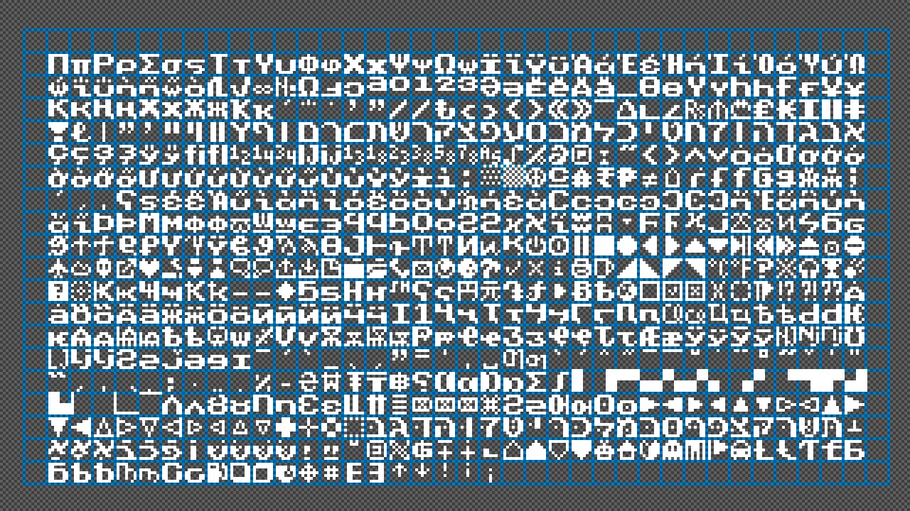
L'altro problema è che il font va preparato in qualche modo, e storicamente nei giochi si sono sviluppate tre strade.
Fare font raster a texture, dove si disegna un atlante con i glifi, e a ogni lettera vanno delle coordinate UV. Questo girerà veloce sulla GPU, ma scala male, perché ogni dimensione ha bisogno del proprio atlante, e ogni variante ha bisogno anch'essa del proprio atlante, il che ci porta a circa 8 varianti di un unico font.
Fare font vettoriali direttamente a runtime, dove il rendering si fa attraverso FreeType o un'API nativa. Questo è meglio, ma più costoso, perché a ogni frame dovresti ricalcolare la rasterizzazione dei glifi, quindi ti serve comunque un atlante di cache che viene riempito man mano che i glifi vengono effettivamente renderizzati.
Puoi usare i font SDF (signed distance field), comparsi dopo il 2007 grazie a Chris Green di Valve. Un glifo è memorizzato non come «c'è un pixel / non c'è un pixel», ma come «la distanza dal bordo più vicino», il che dà una buona interpolazione a qualsiasi scala con una stessa texture, e funziona perfettamente per le label in una scena tridimensionale verso cui la camera si avvicina e si allontana. Doom 2016 fa praticamente tutta la sua UI in SDF, e la stragrande maggioranza dei giochi moderni dopo il 2015 usa esattamente questo approccio per il testo nello spazio 3D.
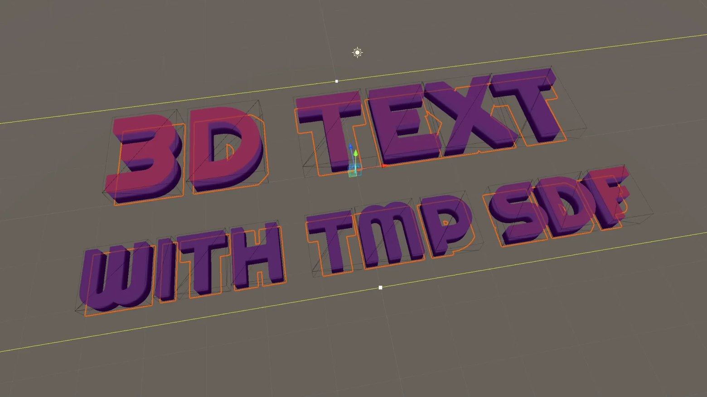
Effetti
Quando il designer chiede «facciamo apparire questa finestra trasparente e diventare visibile in modo fluido», la soluzione ovvia è aggiungere al controllo le proprietà alpha, scale, position_offset e appenderci sopra un'animazione. Anche questo funziona per i casi semplici, ma va rapidamente in pezzi se ci sono molti effetti, li vuoi combinare, o alcuni effetti non si riducono a una singola proprietà (blur, tinting, spostamento fluido del colore, glow lungo il bordo).

Allora un effetto viene portato nella UI come una decisione architetturale. Ora un effetto è un filtro che sta tra le proprietà del controllo e la geometria finale, che poi va al rendering.
struct IGuiEffect {
virtual void apply(const Control& src, RenderRequest& out) = 0;
};
class FadeEffect : public IGuiEffect {
float alpha;
public:
void apply(const Control& src, RenderRequest& out) override {
out.color.a *= alpha;
}
};
class ScaleEffect : public IGuiEffect {
float scale;
public:
void apply(const Control& src, RenderRequest& out) override {
out.transform.scale_around_pivot(scale, src.pivot());
}
};Gli effetti si impilano e vanno uno dopo l'altro, ognuno vedendo il risultato del precedente. È lo stesso modello del post-processing nei renderer moderni (Bloom -> Color Grading -> Vignette), dei filtri CSS (filter: blur(5px) brightness(1.2)) e degli Unity Canvas Renderer Effects. Dagli effetti è cresciuta tutta la UI diegetica, dove l'interfaccia è renderizzata non come un overlay piatto ma dentro la scena. Ma quello non è più un filtro sulla via del rendering, è una pipeline separata.
Render-to-texture e UI diegetica
Quando si prova a incorporare una normale UI 2D in un gioco, l'architettura degli effetti incontra il suo limite naturale, perché un filtro sulla via del rendering presuppone che la UI viva nello spazio piatto dello schermo e si limiti a modificare ciò che ci è finito. Ma non appena il designer chiede «mettiamo la barra della salute proprio sulla schiena del personaggio» o «l'interfaccia dell'inventario compare come un ologramma davanti al giocatore», l'intero stack di filtri diventa inutile, perché l'oggetto ora esiste nel mondo tridimensionale, ha una posizione, una normale, illuminazione e profondità, e va disegnato non sopra il frame finito ma insieme alla scena.
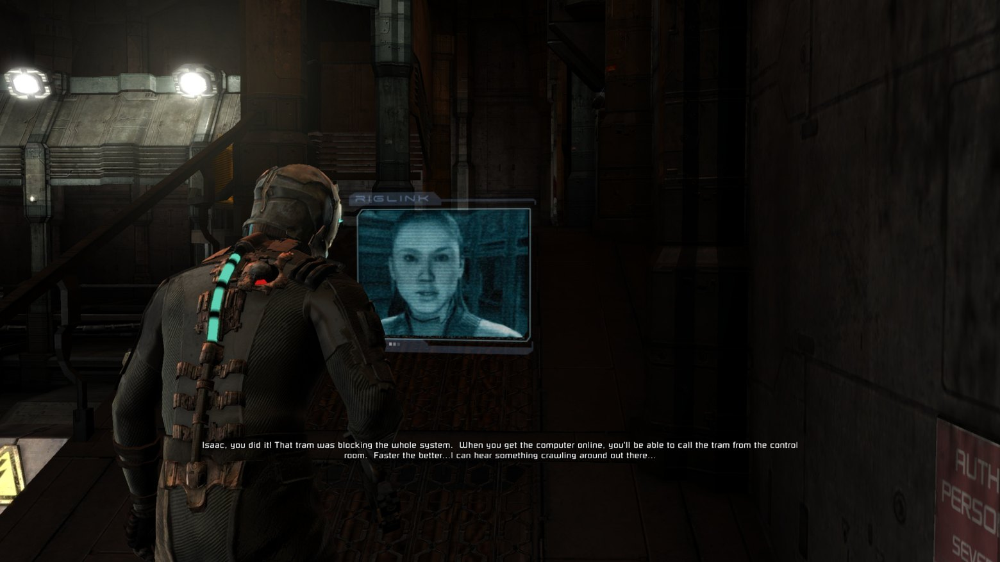
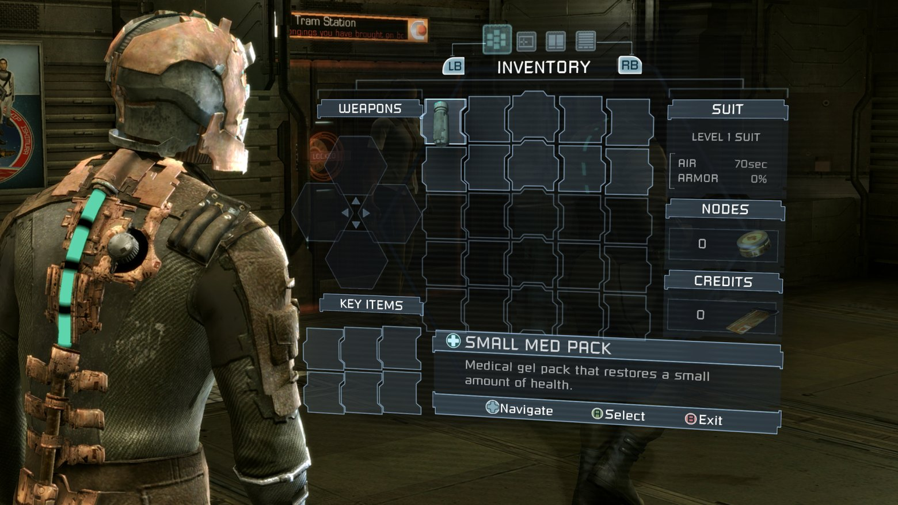
Dead Space è probabilmente l'esempio più citato di una tale transizione, perché non ha affatto un HUD su schermo nel senso classico — la barra della salute è integrata nella spina dorsale della tuta di Isaac ed è renderizzata come geometria del personaggio, l'inventario si dispiega come un ologramma proprio davanti alla camera nello spazio del mondo, e tutto questo passa per lo stesso render pass della geometria della scena, con ombre, con riflessi, con occlusione.
Cyberpunk 2077 va per la stessa strada per le interfacce dei terminali e le proiezioni olografiche che reagiscono all'angolo di visione e sono parzialmente occluse dalla geometria. In entrambi i casi, sotto il cofano questo non è più un filtro o un post-process, ma un set separato di mesh con materiali UI che vivono nella scena come normali oggetti e richiedono la propria gestione di profondità, trasparenza e ordine di disegno rispetto al resto della geometria.
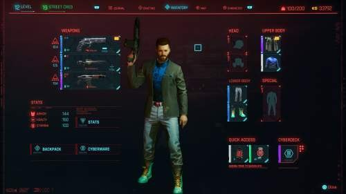
Questo ha generato una separata scuola «diegetica» di UI, come il già citato Dead Space; tra gli altri rappresentanti vividi abbiamo Doom (2016), dove l'arma del personaggio ha un piccolo schermo LCD sulla parte superiore del suo corpo con il conteggio delle munizioni. Questa non è una texture sul modello, è una finestra GUI con testo, renderizzata in una texture in tempo reale e applicata sulla mesh dell'arma.
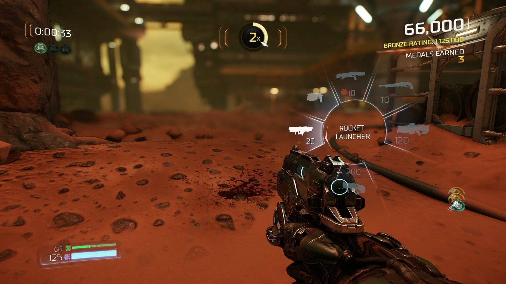
Oppure Metro Exodus (2019), dove l'orologio da polso di Artyom con una bussola e un indicatore di contaminazione è visualizzato come un vero oggetto 3D sul quale è proiettata la UI. La texture con la bussola è aggiornata a ogni frame tramite render-to-texture.
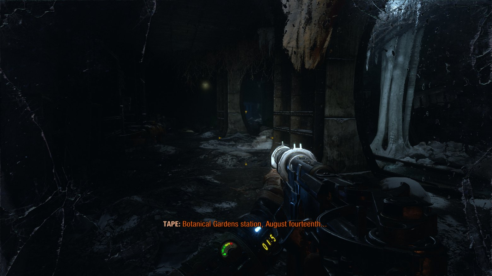
Cioè, assembliamo una finestra nell'editor, poi la renderizziamo in una texture, la applichiamo dove serve, e otteniamo, nel gioco, un televisore con un film e i sottotitoli nella lingua giusta. Questa è ancora una delle applicazioni più eleganti di una GUI ben astratta: una stessa pipeline disegna sia il menu principale nel backbuffer, sia lo schermo del computer in una location, sia l'LCD sull'arma.
Com'è cambiata 20 anni dopo
In realtà non è cambiata — lo scheletro architetturale della GUI è rimasto lo stesso di vent'anni fa, con piccole aggiunte. Composite, proprietà con reflection, collegamenti, template, messaggi sincroni, un Bridge sopra il motore, localizzazione offline — tutto allo stesso posto e nei suoi punti appropriati, solo chiamato in modo diverso in ogni motore e ricoperto di tooling locale, ma i dettagli e le implementazioni sono cambiati.
Il regime immediate-mode (ImGui) è comparso ed è diventato popolare, accaparrandosi quasi tutto il toolkit dei dev-tools. Se 20 anni fa l'editor della GUI era sempre in modalità retained (i controlli memorizzano lo stato), oggi per i pannelli di debug dentro i giochi lo standard è Dear ImGui, dove i controlli vengono ricreati a ogni frame, non c'è albero, non c'è editor.
Motori HTML separati dentro i giochi sono diventati la norma per l'AAA, e Coherent Gameface, Scaleform, i discendenti di Awesomium (CEF) permettono di impaginare una UI di gioco come un sito web. Cyberpunk 2077, PUBG, e una serie di titoli EA, il client Origin — tutto questo è costruito come siti web con rendering nella scena di gioco. I font SDF hanno soppiantato quelli raster, e legare tutto lato-motore dentro la UI ha smesso di essere una rarità. Ultimamente la UI GPU-driven sta tirando sempre di più lo sviluppo su di sé, e molti motori già renderizzano l'intera schermata UI in un unico passaggio.
Ciò che non è cambiato sono le ragioni per cui i sistemi GUI vengono riscritti. Ancora oggi qualsiasi tech lead che approda su un nuovo progetto comincia con la frase «stavolta facciamolo per bene», e ancora oggi, due anni dopo, si scopre che la GUI aveva più compiti di quanti il piano assumesse.
Se vuoi calpestare il punto dolente di un lead, chiedigli se il sistema UI vada riscritto e guarda il suo occhio cominciare a contrarsi mentre corre a prendere le gocce di valeriana.
P.S. Restate sintonizzati — ci sarà una seconda parte su come questa stessa UI è stata tormentata da un gioco all'altro...
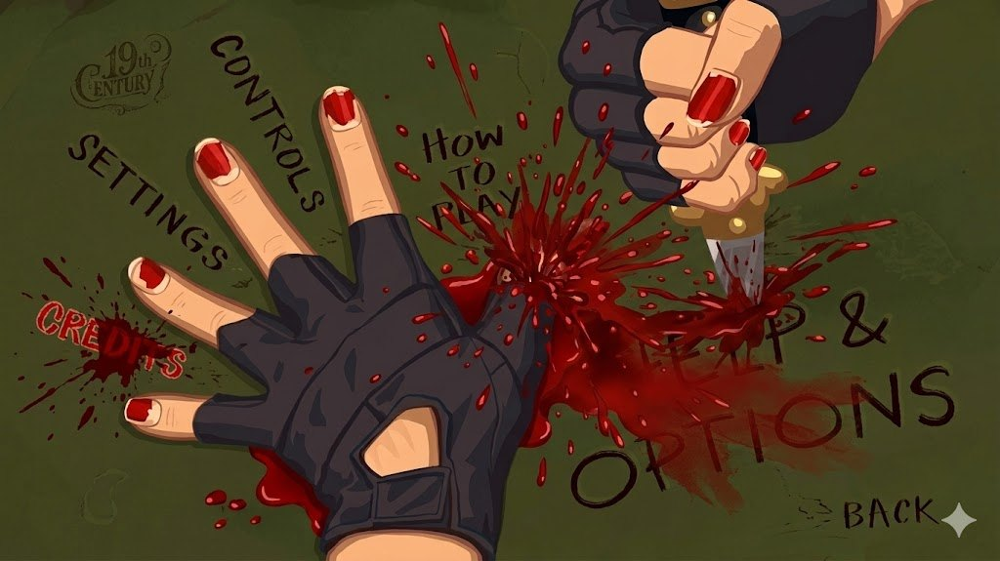
← Tutti gli articoli